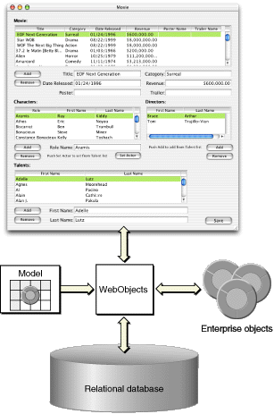

| PATH |

An enterprise object is like any other object in that it couples data with the methods for operating on that data. However, an enterprise object class has certain characteristics that distinguish it from other classes:
In addition to providing classes that manage a set of enterprise-object instances in memory, WebObjects defines an API to which enterprise objects must conform, as well as default implementations for this API. As a result, you only need to concentrate on the parts of your enterprise-object classes specific to your application.
To maximize the reusability and extensibility of your objects, they shouldn't embed knowledge of the user interface or database alongside the business logic. For example, if you embed knowledge of your user interface, you can't reuse the objects because each application's user interface is different. Similarly, if you embed knowledge of your database, you'll have to update your objects every time you modify the database's schema.
If not in the business objects, then where does this knowledge go? It's handled by WebObjects as shown in Figure 3-1.
Figure 3-1 Connecting enterprise objects to data and the user interface
WebObjects provides a database-to-objects mapping, called a model, so your objects are independent of the database. WebObjects also provides an objects-to-interface mapping so they are independent of the user interface. This approach allows you to create libraries of enterprise objects that can be used in as many applications as you need, with any user interface, and with any database server. Therefore, you can concentrate on coding the logic of your business while WebObjects takes care of the rest.
For example, you could create an enterprise object called Customer that defines such business rules as customers must have a work or home phone number, or customers cannot spend more than their credit limit. Without rewriting your business logic, you could use these objects in a public, Web-based application and an internal customer service application. You could also switch the database that serves the customer data.